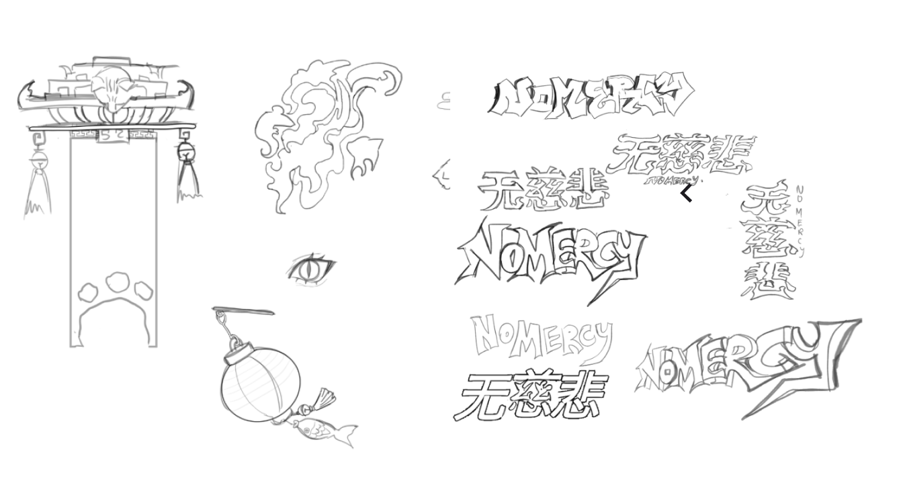
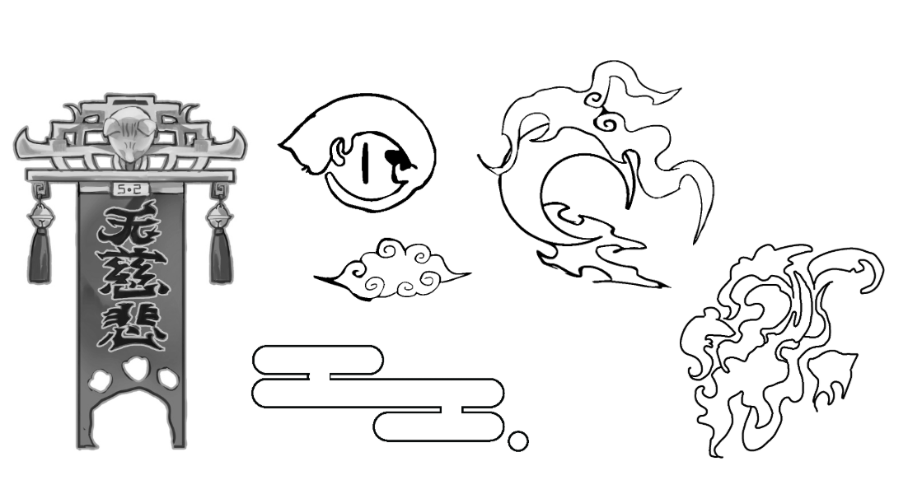
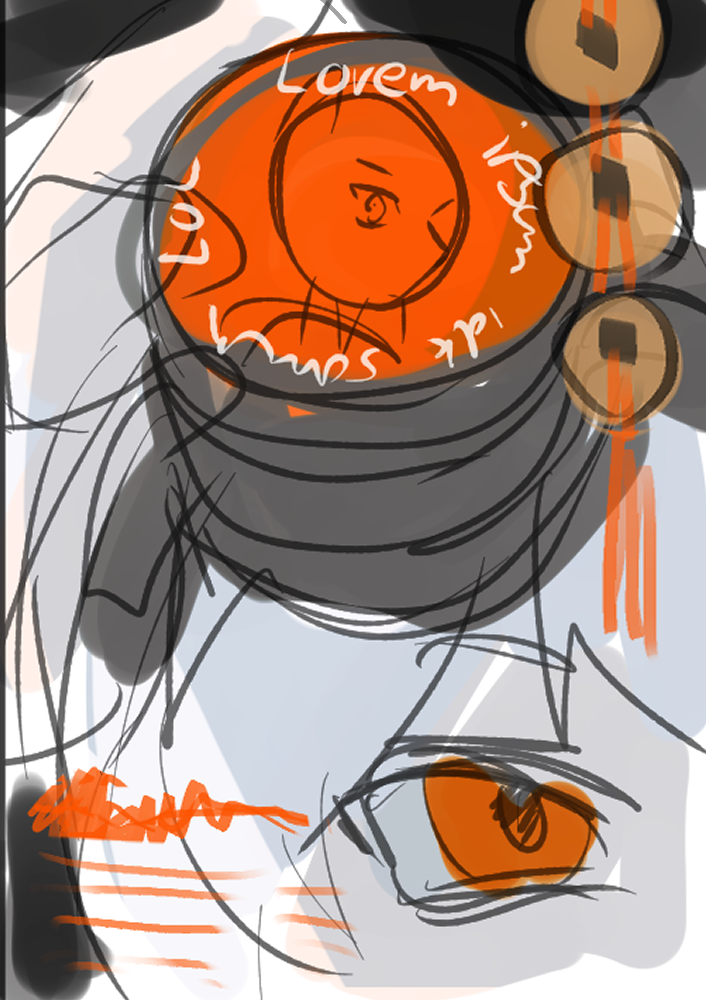
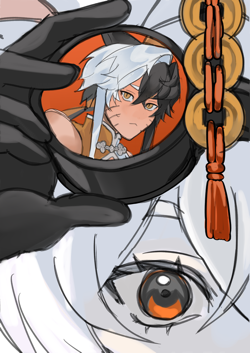
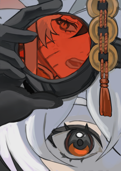

In my journey in producing a logo for 'Without Mercy' I took into consideration two main aspects in logo design. Typography and imagery. I decided to first start seperately then attempt at combining them together in the final product. Considering Without Mercy's concept of a modern xianxia universe… incorporating both hanzi with a calligraphic style and the english title

This was by far the most difficult process in my endevour.
I found that the compisition of my logos with both aspects combined
was not visually appealing. Then, I attemptted to experiment with
colour on my monochromatic imagery. The red did not look very legible
compared to the regular monochromatic palatte.
I did not feel satisfied with the combined results. For other artists
wishing to do logo design, I urge you to composite both imagery and typography
together if you want it in your desired outcome.
I decided to rely on only a typographic logo, as I believed it was interesting
visually whilst aesthetically pleasing and versitile. This made sense considering
my research and understanding of typography in my studies in chinese calligraphy.
In the future, I wish to document a more successful logo endevour; But for now this
is my raw experience and the logo process of

I find this step extremely important as to gauge your artistic vision before you begin refining the illustration! I find that starting an ilustration without thumbnailing, you will inevitably faec struggle, and end up wasting alot of time tweaking and changing eitehr inbetween the process and after. I do this by preparing a small sketch and 'throwing up' colours on it as to see what I want compositionally. This saves alot of time and mental for me.

At this stage, you will need to make a cleaner / clearer version of your initial sketch as well as placing the colours with minimum shading to prepare for rendering.

Only at this stage is when you cna comfortable start changing thinsg from your initial thumbnail, like as you can see I changed the extent of which Yingwei's goggles reflect Xiang Yu's face. As im not very clean with my linework, I also spend this time cleaning my lines as to make them look more finished ratehr than sketch like. You might also notice the changes in value, I spend this time fixing colouring mistakes and adjusting the values of the piece as to add realisitic lighting and overal just to refine the piece.